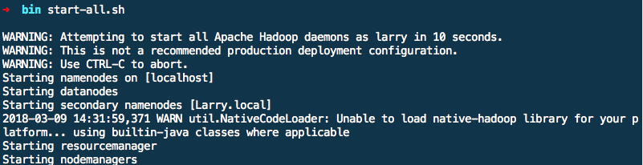

目前有很多博客了，我是按照学习Spark——环境搭建（Mac版）搭建的。
但是目前很少有3.0.0版本的安装教程。我把这篇博文中的内容修改成最新的Hadoop 3.0.0版本，并除去一些文字错误和不必要的配置以后，如下。
我们需要搭建的是Spark和Hadoop环境。Spark依赖于Hadoop的HDFS以及YARN计算框架。安装Hadoop的过程比较复杂，需要一些耐心。
安装前必备
- 操作系统：Mac OS X
- JDK：1.8.0_121
- 命令终端：iTerm2
- 软件包管理工具：brew
安装Hadoop
上面步骤和条件如果都具备的话，就可以安装Hadoop了。
1. 配置ssh
配置ssh就是为了能够实现Hadoop的免密登录，这样方便远程管理Hadoop并无需登录密码在Hadoop集群上共享文件资源。如果你的机子没有配置ssh的话，在命令终端输入ssh localhost是需要输入你的电脑登录密码的。配置好ssh后，就无需输入密码了。
第一步就是在终端执行
ssh-keygen -t rsa，之后一路enter键，当然如果你之前已经执行过这样的语句，那过程中会提示是否要覆盖原有的key，输入y即可。第二步执行语句
cat ~/.ssh/id_rsa.pub >> ~/.ssh/authorized_keys用于授权你的公钥到本地可以无需密码实现登录。
理论上这时候，你在终端输入ssh localhost就能够免密登录了。
2. 下载安装Hadoop
这时候brew的好处就体现出来了，你无需到Hadoop官网去找下载链接，只要在命令终端输入brew install hadoop等命令执行完，你就可以看到在/usr/lcoal/Cellar目录下就有了hadoop目录，表示安装成功。
3. 配置Hadoop
3.1 配置HDFS地址和端口号
进入目录/usr/local/Cellar/hadoop/3.0.0/libexec/etc/hadoop，打开core-site.xml将<configuration></configuration>替换为
<configuration>
<property>
<name>hadoop.tmp.dir</name>
<value>/usr/local/Cellar/hadoop/hdfs/tmp</value>
<description>A base for other temporary directories.</description>
</property>
<property>
<name>fs.default.name</name>
<value>hdfs://localhost:9000</value>
</property>
</configuration>
3.2 配置mapreduce中jobtracker的地址和端口
在相同的目录下，你可以看到一个mapred-site.xml.template首先将文件重命名为mapred-site.xml，同样将<configuration></configuration>替换为
<configuration>
<property>
<name>mapred.job.tracker</name>
<value>localhost:9010</value>
</property>
</configuration>
3.3 修改hdfs备份数
相同目录下，打开hdfs-site.xml加上
<configuration>
<property>
<name>dfs.replication</name>
<value>1</value>
</property>
</configuration>
变量dfs.replication指定了每个HDFS默认备份方式通常为3, 由于我们只有一台主机和一个伪分布式模式的DataNode，将此值修改为1。
3.4 格式化HDFS
这个操作相当于一个文件系统的初始化，执行命令hdfs namenode -format。 出现提示输入Y/N时要输入大写Y。
4. 配置Hadoop环境变量
因为我用的是iTerm2和zsh，所以打开~/.zshrc添加
export HADOOP_HOME=/usr/local/Cellar/hadoop/3.0.0
export PATH=$PATH:$HADOOP_HOME/sbin:$HADOOP_HOME/bin
再执行source ~/.zshrc以确保配置生效。配置的目的是方便在任意目录下全局开启关闭hadoop相关服务，而不需要到/usr/local/Cellar/hadoop/3.0.0/sbin下执行。
5. 启动/关闭Hadoop服务
启动/关闭HDSF服务的命令为
./start-dfs.sh
./stop-dfs.sh
启动/关闭YARN服务
./start-yarn.sh
./stop-yarn.sh
启动/关闭Hadoop服务(等效上面两个)
./start-all.sh
./stop-all.sh

通过访问以下网址查看hadoop是否启动成功
- Node Information: http://localhost:9870
- Resource Manager: http://localhost:8088
- NodeManager : http://localhost:8042
这里要注意的是在3.0.0版本中http://localhost:50070转移到了http://localhost:9870.
安装Spark
有了前面这么多的准备工作，终于可以安装Spark了。到Spark官网下载你需要的Spark版本，注意这里我们看到需要有依赖的Hadoop，而且还让你选择Hadoop的版本，这里默认即可。下载完直接双击压缩包就会解压，将其重命名为spark放到/opt下面。
毫无疑问，我们还需要一个环境参数配置，打开~/.zshrc添加
export SPARK_HOME=/opt/spark
export PATH=$PATH:$SPARK_HOME/bin
走到这一步，我们终于可以启动spark了，打开终端，输入spark-shell, OK